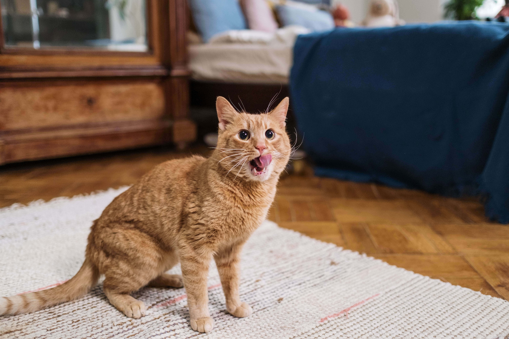
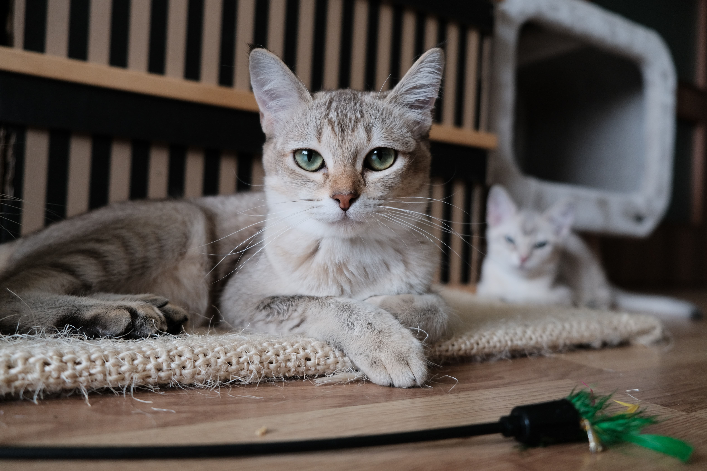

with CATで
できること

毎日のごはん、体重、尿の量などをモニタリング
ご家族のねこ専用のページから毎日のごはんを登録できます。登録したあとはワンクリックで記録できます。 また、専用の「にゃんこハウス」を使用すれば、毎日の体重、尿の量などを自動で記録することができます。
ご主人の不在時に、リアルタイムでねこをモニタリング
猫専用のページから設定すれば、ご使用のスマートフォンからリアルタイムでねこの状況をモニタリングできます。
遠隔からモニタリングできることはもちろん、ねこ様に話しかけることも可能です。
ねこのモニタリングデータから、病気や不調をアラート
毎日のごはん、体重、尿の量などから、ねこ様の病気の兆候、体の不調をアラートします。
腎臓病、膀胱炎などの病気に関わらず、その兆候なども含め具体的な状況や改善策をお知らせします。
※本サービスは医療サービスではありませんので、病気の予防、診断、治療はできません。ねこ様の日々の健康管理の参考としてご使用いただき、不調が見られる場合は獣医師の診断を仰いでいただくようお願いいたします。